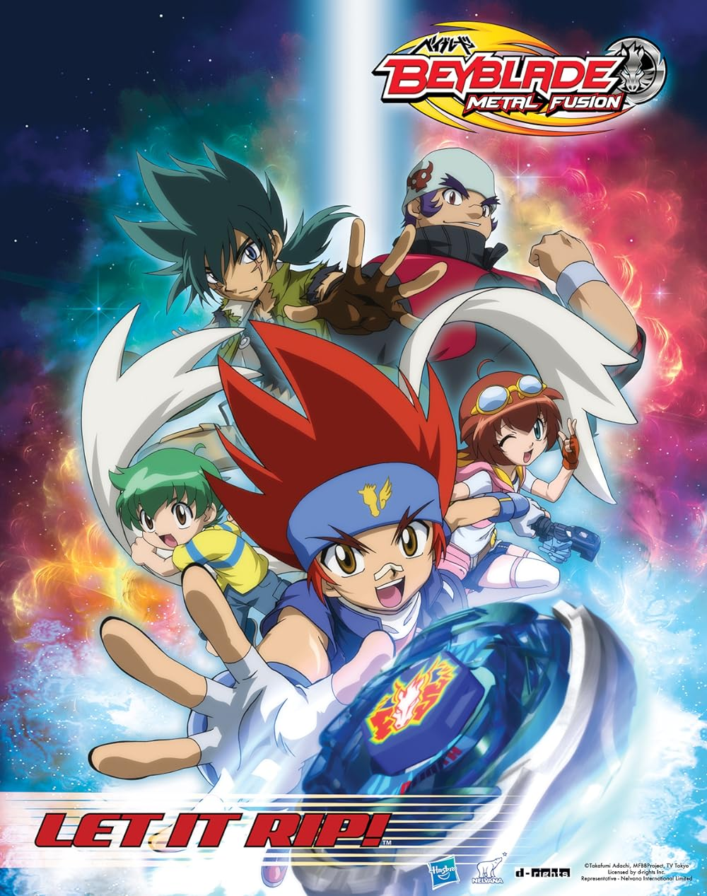

Anime-ul începe cu un băiat pe nume Kenta care este un blayder destul de slab. Dupa un turneu în care a pierdut a fost atacatde catre un tip pe nume Benkei care face perte din vânatori de puncte(punctele arata la ce rank sa afal acel blayder si se castiga in lupte) aceștia sa lupta necinstit si le fura toate punctele blayderilor mai slabi. Dar Kenta a fost salvat de catre Ginka Hagane(se proninta Ginga Hagane) un blayder talrntat cu peste 30000 de puncre. Peste ceva timp, Benkei la provocat pe Ginka la o lupta necinstită in care Ginka a trebuit sa se lupte cu 100 de alți blayderi, iar acesta ia invins pe toti, lucru ce la surprins pe liderul vânatorilor de puncte pe nume Kyoya. Ziua urmatoare Bankei a fost trimis de Kyoya să îl ieie pe Flame Sagittario(bay-ul lui Kenta dar o specificare un bay este un titirez care sa zice că are puteri nelimitate). Dupa o lupta fantastica Kyoya si al lui bay Rock Lion a pirdut in fatoa lui Ginka si bay-ul lui Storm Pegasus. Apoi la o oprire la malul lacului Ginka si Kenta au intalnito pe Madoka, o fata care se ocupa cu reparatia bay-ulirol. Dupa ceva timp Kyoya la intalnit pe Doji care este liderul organizatiei Dark Nebula, dar sa stiti ca Doji e pus pe rele. Il provoaca pe Kyoya la o lupta, bay-ul lui Doji dind Dark Wolf, iar daca Kyoya pierde trebuie sa se inroleze in Dark Nebula pe scurt Kyoya pierde. Sa vorbim de viata lui Ginka, aceste traieste in satul Koma un sat unde bayblaidul este folosit si inafara unei lupte, dar la un moment dat Doji si un baiat pe nume Ryuga au vent in satul Koma dupa un bay interzis numit L-drago iar tatal lui Ginka a merd dupa iei der nu a putut sal opreasca pe Ryuga din al lua pe L-drago dar inainte sa fie zdrobit de niste daramaturi tatal lui Ginka i-la daruit pe Storm Pegasus. Pentru mai multe informatii vizualizati urmatorul video:
 body{ background-color:#8F BC 8F; }